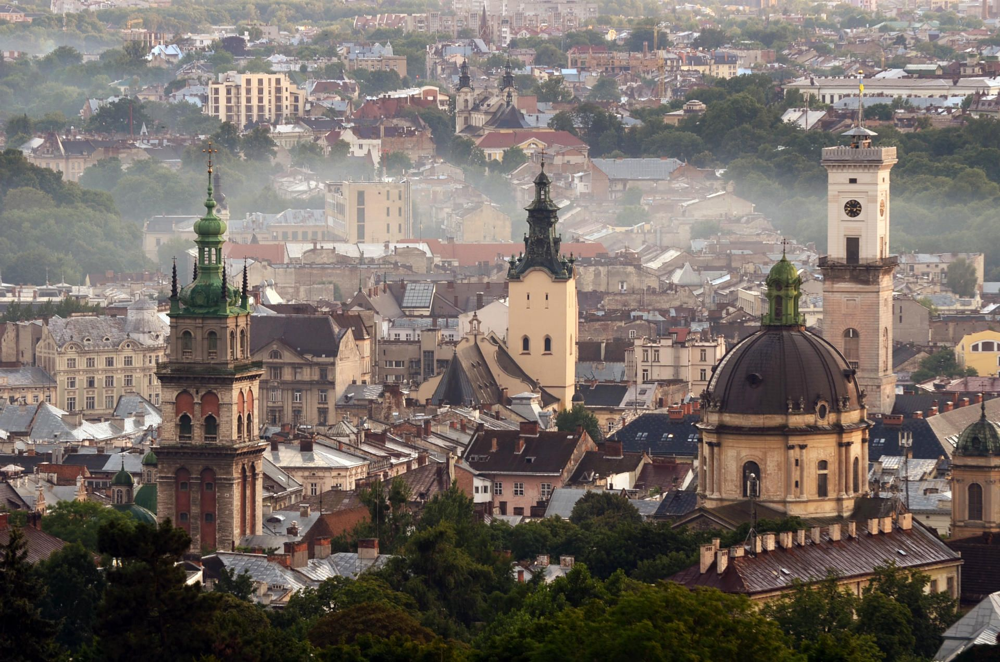

Народилася 23 вересня 2002 року в місті Славута, Хмельницька обл.
Освіта:
Львів — місто обласного значення в Україні, адміністративний центр Львівської області, Львівської агломерації, Львівського району, Львівської міської громади, національно-культурний та освітньо-науковий осередок країни, великий промисловий центр і транспортний вузол, вважається столицею Галичини та центром Західної України.
